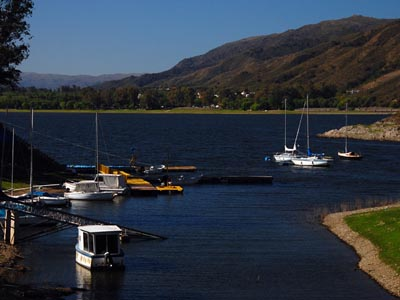
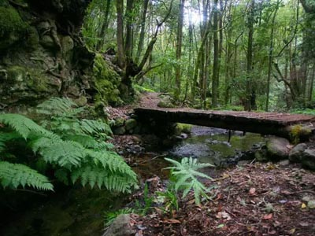
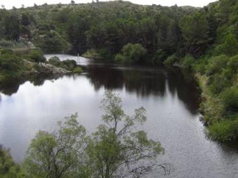
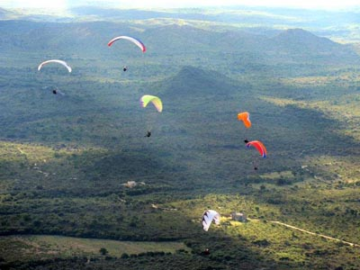
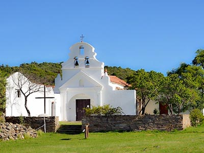

Lago San Roque

Todos aquellos a quienes les gusten los deportes náuticos, deben acercarse al lago San Roque. Ubicado en Villa Carlos Paz, resulta un sitio perfecto para la práctica de este tipo de actividad.
En sus orillas existen numerosos paradores en los que es posible disfrutar de muchas propuestas gastronómicas y espectáculos musicales.
San Marcos Sierras

El valle de Punilla está repleto de lugares en los que la tranquilidad y el sosiego resultan encantadores. Entre ellos, sin dudas, merece destacarse el pequeño pueblo de San Marcos Sierras, característico por sus casas bajas, su ritmo lento, sus ríos, las calles y el paisaje serrano que le da marco.
Dique San Jerónimo
En las cercanías de La Cumbre se encuentra el muy pintoresco dique San Jerónimo, inaugurado en 1942.
Este embalse, que constituye el primer dique de arco construido en todo el continente sudamericano, provee de agua a la población de La Cumbre y es un lugar ideal para disfrutar del encanto natural de la región.
El Cristo de La Cumbre

Desde la localidad, un sendero perfectamente demarcado trepa las laderas siguiendo un Vía Crucis, que lleva hasta lo alto del cerro en donde una figura de Cristo de siete metros de altura abre sus brazos hacia la maravillosa geografía del valle de Punilla.
Cuchi Corral

El cerro Mirador, de Cuchi Corral, es uno de los mejores lugares de la Argentina para la práctica del vuelo libre, ya sea parapentismo o aladeltismo. Las vistas del Valle del Río Pinto son de los paisajes mas lindos de la zona
Estancia La Candelaria

Escondida en medio de un ancho valle ubicado al norte de las Sierras Grandes, a más de mil metros de altura sobre el nivel del mar, se encuentra la estancia La Candelaria.
Levantada por los jesuitas en el siglo XVII, debe su nombre a la Virgen de las Candelas y cuenta con una vieja iglesia de paredes blancas. Declarada patrimonio de la Humanidad por la Unesco